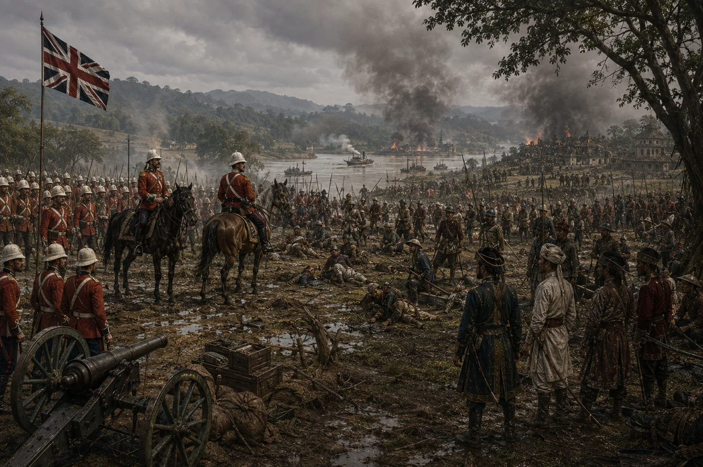

Expulsion of the Burmese from Upper Assam
1824–1825 · The days of the Burmese

Colonel Richards defeats and forces surrender of the Burmese garrison at Rangpur stockade in January 1825.
Sources have not yet been catalogued for this record.
People: Colonel Alfred Richards, Jogeswar Singha